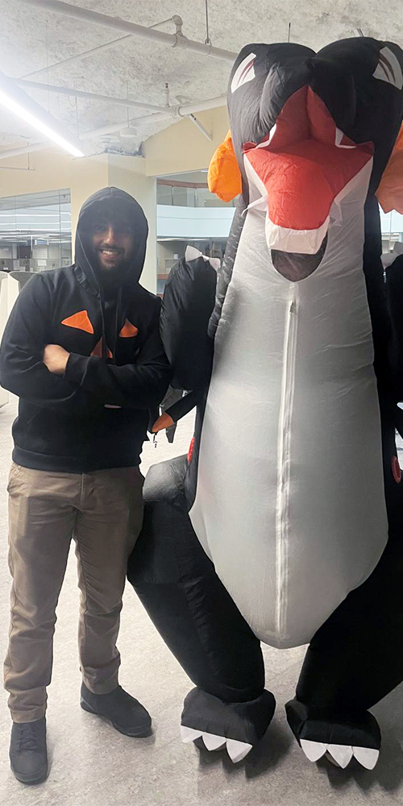
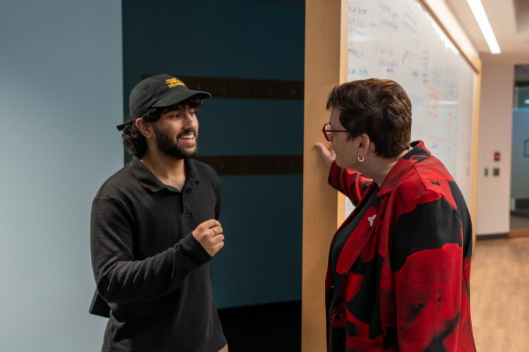

Abstract / Introduction
During my co-op experience with the Ministry of Public and Business Service Delivery and Procurement, I worked as a Data Analyst Co-op Student supporting data governance, public data access, analytics, and technical initiatives.
My experience provided an opportunity to work with the Ontario Data Catalogue and understand how government data is maintained, validated, documented, analyzed, and made accessible to users.
My responsibilities ranged from responding to user questions and validating datasets to developing analytical dashboards, maintaining a catalogue of data standards and artifacts, configuring a CKAN testing environment, and contributing to research and modernization initiatives.
As my work term progressed, my responsibilities expanded from learning and supporting existing operational processes to contributing to larger analytical, technical, and research projects. This progression strengthened my technical abilities while also teaching me how computing and data work connect with user needs, organizational priorities, and public service.
Employer Overview
I worked at the Ministry of Public and Business Service Delivery and Procurement (MPBSDP), part of the Ontario Public Service, at 595 Bay Street in downtown Toronto.
The ministry supports government ministries, agencies, and the broader public sector through enterprise services including digital platforms, procurement, business services, consumer services, and information management.
My work was closely connected to government data and digital services, particularly the Ontario Data Catalogue (ODC). Working in this environment allowed me to understand how computing, data governance, digital platforms, public service, and user needs intersect within a large organization.
My Role
As a Data Analyst Co-op Student, I supported a combination of operational, analytical, and technical work.
- Supported dataset publication, updates, and validation within the Ontario Data Catalogue
- Reviewed metadata and identified data-quality issues
- Responded to and tracked user questions through Jira
- Maintained and improved documentation for data standards and artifacts
- Developed and explored Power BI dashboards and analytical reporting
- Investigated patterns and trends within ODC requests
- Configured a local CKAN environment using a Linux virtual machine
- Supported research, modernization, and product-related initiatives
Goals and Learning Outcomes
At the beginning of my co-op experience, one of my main goals was to develop a stronger understanding of data governance and how data systems operate in a real organizational environment.
I also wanted practical experience with technologies such as CKAN, Power BI, Excel, Jira, Linux, and data-validation tools while strengthening my analytical problem-solving and professional communication skills.
Another important goal was understanding the relationship between technical work and the people who ultimately depend on that work. Issues with metadata, dataset accuracy, documentation, or publishing processes could directly affect someone attempting to access government information.
As my responsibilities expanded, my learning goals developed as well. I became increasingly interested in identifying patterns across requests and datasets rather than only resolving individual issues. This led to greater involvement in dashboarding, user-question analysis, research, modernization, and other analytical projects.
Ontario Data Catalogue
A significant part of my co-op experience involved supporting the Ontario Data Catalogue.
I learned how datasets were structured, published, updated, and maintained, including metadata, update schedules, dataset validation expectations, and how public user questions could relate to dataset accuracy and updates.
I also developed an understanding of the collaboration required to maintain the catalogue. A single dataset issue could involve a public user, the data lead responsible for the dataset, and internal teams responsible for supporting the platform.
Responding to User Questions
One of my recurring responsibilities was supporting questions submitted by users of the Ontario Data Catalogue.
I reviewed incoming questions to understand the issue and determine the appropriate next step. Depending on the request, this could involve seeking clarification, requesting a dataset update or correction, or routing the issue to the appropriate data lead through Jira.
I also followed up on outstanding requests to help support timely resolution and maintained clear and professional communication throughout the request process.
This experience showed me that data quality is ultimately connected to the user experience. Even when a dataset technically exists, unclear metadata, outdated information, or inconsistencies can significantly affect its usefulness.
Dataset Updates and Validation
I supported scheduled dataset updates and validated CSV datasets against defined data-quality and validation requirements.
This involved identifying errors or inconsistencies, reporting issues to data leads, and supporting coordination so datasets met publishing standards.
The work strengthened my attention to detail and taught me to approach data quality systematically rather than simply checking whether information appeared correct.
CKAN Technical Environment
One of the more technical parts of my experience involved configuring a local CKAN 2.9 environment to support testing, validation, and product-side work.
I configured a Linux-based virtual machine using Ubuntu 20.04.4 and worked with the supporting services and dependencies required for CKAN to operate correctly.
I implemented required configuration changes to enable dataset validation and verified the environment through service checks and troubleshooting.
This project strengthened my confidence working with unfamiliar technical environments. When something did not work as expected, I had to investigate the problem, understand the error, and work systematically through potential solutions.
Standards and Data Artifacts Catalogue
Another major project involved improving how organizational data standards and artifacts were documented and accessed.
I helped consolidate standards and artifacts into a structured Excel-based catalogue. This included organizing information into consistent fields, validating hyperlinks to source documents, reviewing entries for missing or inconsistent information, identifying duplicated information, and supporting overall data quality.
The goal was not simply to create a spreadsheet. The project established a structured and reliable source of information that could support documentation and future discovery and dashboarding capabilities.
AI-Assisted Description Development
I used Excel alongside AI-assisted tools to help extract key information and develop concise descriptions using a common format and style. I then reviewed and refined those descriptions to improve clarity and consistency.
This gave me practical experience using AI as a supporting productivity tool rather than treating its output as a finished product. Human review remained important for accuracy, context, and quality control.
Power BI Dashboard Development
Using the structured Excel catalogue as a data source, I contributed to developing a Power BI dashboard for standards and artifacts.
The dashboard was intended to provide a centralized and searchable view of standards and artifacts and support easier discovery and navigation across teams.
Development followed documented business requirements and an approved Power BI layout, with functionality such as search, filtering, and drill-through forming part of the planned discovery experience.
This project helped me understand that effective dashboard development involves much more than creating visualizations. The underlying data must first be organized correctly, and the dashboard needs to solve an actual user or business problem.
ODC Ticket Tracking and User Question Analysis
As my understanding of the Ontario Data Catalogue developed, my analytical work expanded beyond responding to individual requests.
I worked on ODC ticket-tracking analysis and explored how Jira request information could provide better visibility into catalogue activity.
I also conducted deeper analysis of user questions by examining trends and patterns and exploring how requests could be classified within the ODC ticket-tracking system.
Earlier technical exploration involved investigating how Jira and API-based information could potentially support Power BI reporting. This work also exposed technical limitations involving API access and data availability.
This represented an important progression in my experience. Instead of looking only at one user question at a time, I began considering what a collection of user questions could reveal about the platform and its users.
Additional Data Analysis and Modernization Projects
As my responsibilities expanded, I contributed to several additional analytical, research, and product-focused initiatives.
Restricted & Unrestricted Dataset Analysis
Analytical work examining datasets within the Ontario Data Catalogue environment.
ODC Modernization
Contributed analytical work supporting modernization initiatives related to the Ontario Data Catalogue.
Jurisdictional Scan
Supported research examining open data catalogues across other jurisdictions.
Harvester History UI Investigation
Participated in investigation related to the Harvester History user interface.
Application Portfolio Management
Contributed to Application Portfolio Management dataset analysis.
These projects broadened my experience beyond the daily operation of the Ontario Data Catalogue and helped me understand how data analysis can support research, product decisions, modernization, and broader organizational priorities.
Leadership and Professional Development
My co-op experience was not limited to technical responsibilities. I also served as a Divisional Lead for United Way fundraising activities.
I coordinated team members and supported the organization and operation of fundraising events.
One initiative involved organizing a VR roller-coaster experience as an engagement activity. I helped coordinate the event, manage participation flow and cash collection, and the initiative generated approximately $100 in profit.
I also assisted in organizing a biryani sale as part of the broader fundraising effort.

This experience allowed me to develop leadership skills in a different setting from my technical projects. It required organization, communication, teamwork, and the ability to take responsibility for an activity from planning through execution.
I also completed a two-day in-person First Aid certification and participated in professional development related to artificial intelligence.
Recognition and Faces of the Ministry
One of the most meaningful highlights of my co-op experience was receiving recognition for my contributions from the Deputy Minister.
Having my work acknowledged at this level was an important moment in my professional development. It demonstrated that the contributions I was making as a co-op student were being recognized beyond my immediate day-to-day responsibilities and team.

I was also selected to be featured in Faces of the Ministry, an internal ministry article highlighting employees and the positive work and contributions taking place across the organization.
Being featured gave me an opportunity to reflect on my experience and share some of the work and learning that had shaped my co-op journey.
The recognition reinforced an important lesson from my placement: being a co-op student does not prevent someone from making a meaningful contribution to a large organization.
Taking ownership of responsibilities, being willing to learn, supporting others, and contributing beyond basic assigned tasks can create an impact.
Challenges and Lessons Learned
One of the most important lessons from this experience was learning how to work when there is not always an obvious solution.
Technical limitations affected some of the reporting and API work I explored. Dataset validation sometimes required identifying the source of inconsistencies before they could be resolved.
Configuring CKAN required troubleshooting across multiple components, while user questions sometimes required investigation before the appropriate next step became clear.
These situations taught me to become more comfortable with ambiguity. Instead of expecting an immediate answer, I learned to break problems into smaller components, gather information, test possible approaches, and communicate with people who had expertise in areas I was still learning.
I also developed a stronger appreciation for the relationship between data governance and user experience.
Metadata requirements, validation rules, documentation standards, and structured fields may appear highly technical, but they ultimately influence whether another person can find, understand, and use information.
Reflection on My Development
Looking back at my experience, one of the biggest changes was the way I approached problems.
At the beginning, much of my attention was focused on understanding existing processes: how a dataset is updated, how a Jira request moves through the system, how validation works, and how CKAN operates.
As I became more comfortable with these processes, I started thinking more analytically about them.
Why does this issue occur?
Is there a pattern across multiple requests?
How could this information be measured or visualized?
Could this process be made easier for users?
That shift from completing individual tasks toward understanding systems, patterns, and opportunities for improvement was one of the most valuable outcomes of my co-op experience.
I learned that technical ability is important, but successful work in a large organization also depends on communication, collaboration, adaptability, and understanding why the work matters to the people who ultimately use it.
Conclusion
My co-op experience as a Data Analyst provided me with practical exposure to data governance, analytics, open-data technologies, reporting, technical troubleshooting, research, modernization, and professional collaboration.
Working with the Ontario Data Catalogue allowed me to see the relationship between data and its users—from validating individual CSV files and maintaining metadata to responding to user questions, identifying broader patterns, and considering opportunities for platform improvement.
Projects involving CKAN, Power BI, Jira, Excel, data standards and artifacts, and analytical research allowed me to apply computing concepts within a real organizational environment while continuously developing new technical skills.
My responsibilities developed significantly throughout the experience. I progressed from learning existing processes and supporting operational activities to contributing to analytical dashboards, technical environments, research, modernization initiatives, and broader organizational projects.
Receiving recognition from ministry leadership and being featured in Faces of the Ministry was particularly meaningful because it provided an opportunity to reflect on that progression and the contributions I had made throughout my placement.
Most importantly, this experience changed the way I think about data.
I now understand effective data management as more than simply storing or analyzing information. It requires ensuring that information is accurate, understandable, discoverable, appropriately governed, and useful to the people who depend on it .
Acknowledgements
I would like to thank my supervisors, team members, data leads, colleagues, and ministry leadership for their guidance, feedback, encouragement, and support throughout my co-op experience.
Their willingness to answer questions, provide feedback, involve me in different projects, and give me opportunities to develop professionally played an important role in my experience.
I am grateful for the opportunity to contribute to the organization while developing technical, analytical, communication, and leadership skills that I will carry forward into future academic and professional experiences.